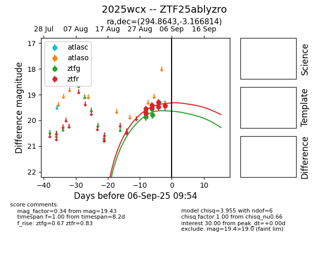

FINK: ZTF25ablyzro
Lasair: ZTF25ablyzro
ALeRCE: ZTF25ablyzro
TNS: 2025wcx
YSE: 2025wcx
ZTF25ablyzro (ztf,fink)
2025wcx (tns,yse)
equatorial (ra, dec) = (294.8643,-3.16681)
galactic (l, b) = (35.6012,-12.12351)

last ztfg=20.00, ztfr=19.56
5 ztfg, 15 ztfr detections